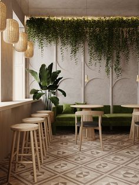

Welcome to Cravory,
where every bite tells a story and every sip is a journey.
Nestled in the heart of urban life, Cravory is more
than just a cafe; it's a haven where culinary passion
meets heartfelt connections. Born from the shared dreams
of lifelong friends, Cravory brings together the
expertise of artisans in pastry and coffee craft.
Our space, once a forgotten gem, now radiates warmth
with its inviting atmosphere and rustic charm.
Step inside and be greeted by the irresistible aroma of
freshly baked pastries and meticulously brewed coffee.
Our menu is a celebration of flavors,
from flaky croissants to decadent cakes,
each lovingly crafted to delight your senses.
But Cravory is more than just a destination for
exceptional food and drink. It's a place where strangers become
friends, where conversations flow as freely as our coffee.
Here, time slows down, allowing you to savor each moment,
to indulge in the simple pleasures of life.
Whether you're seeking a moment of solitude with a good book
or yearning for lively conversation with old friends,
Cravory welcomes you with open arms. Join us as we
embark on a journey of taste and togetherness,
one delicious bite at a time.
|
 |